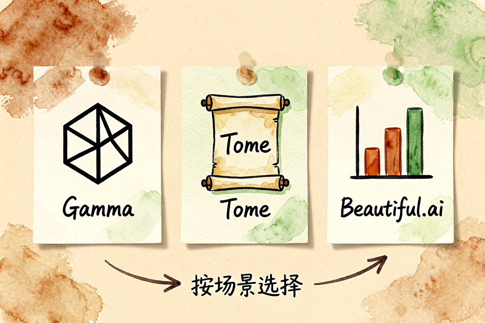
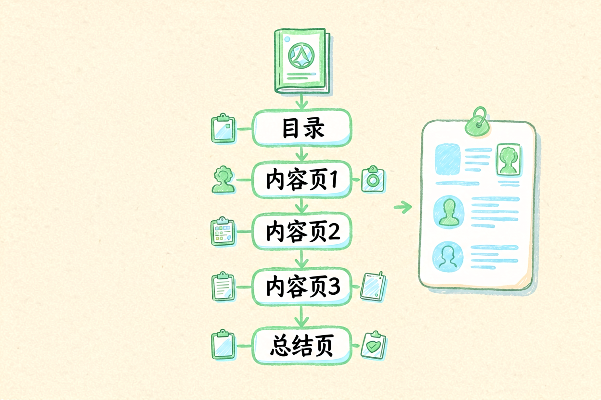
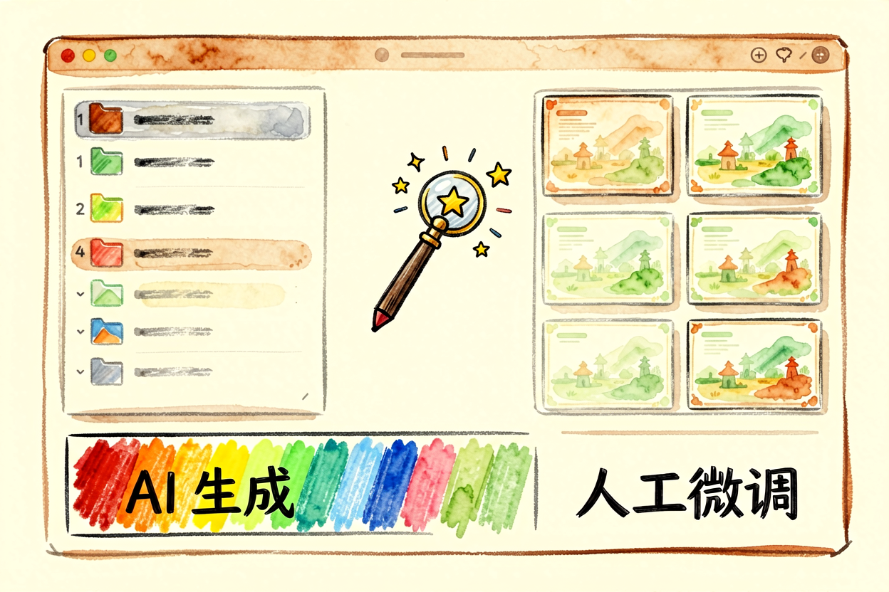
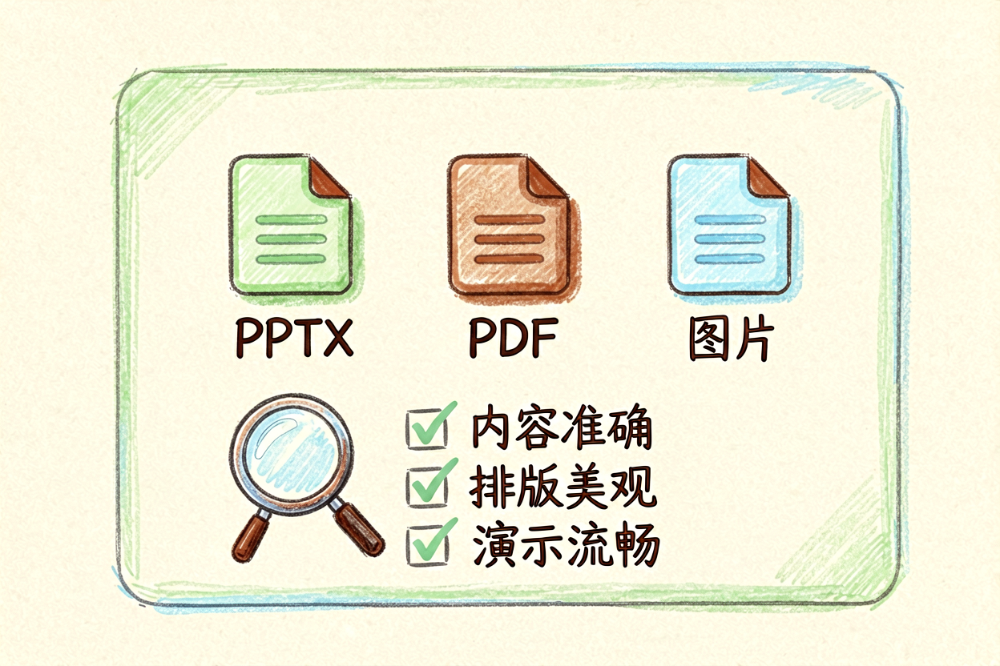
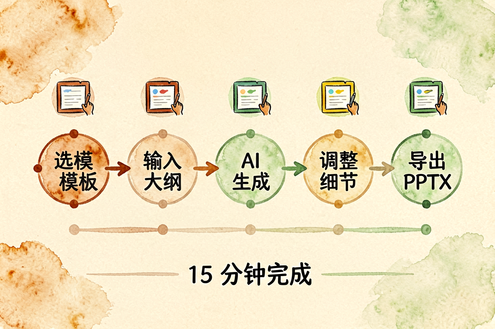
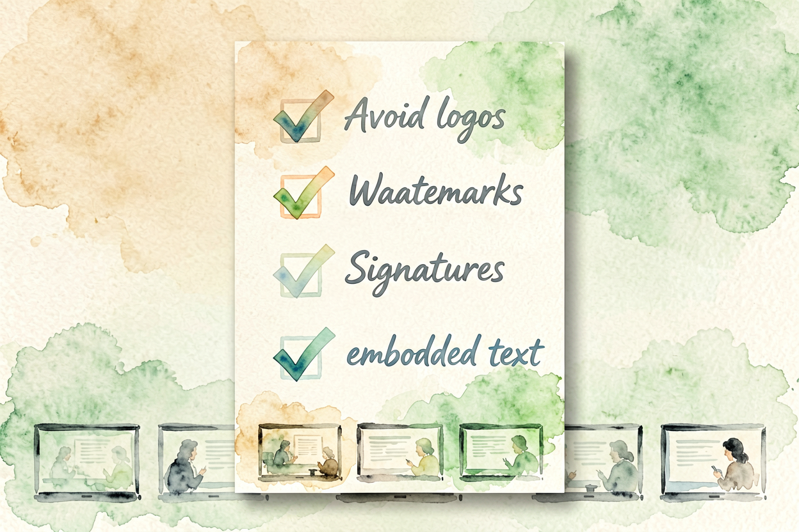

AI 一键生成 PPT：用 Gamma 做出专业级演示文稿
做 PPT 最头疼的不是内容，是排版和设计。用 AI 一键生成，输入主题就能出完整演示文稿，省下的时间够喝三杯咖啡。
AI生成PPT是本文的核心主题。 !配图1Gamma界面概览
{kind=link}
AI生成PPT入门：从主题到成稿的五分钟
传统做 PPT 的流程是：想大纲、找模板、填内容、调排版、加配图，一个 10 页的演示文稿至少花两小时。AI 生成 PPT 把前四步压缩到五分钟——输入主题，AI 自动出大纲、选模板、填内容、调排版，你只做最终微调。
这和AI PPT 工具对比里讲的逻辑一致，但本文专注 Gamma 这一个工具，讲清每一步怎么做。Gamma 的优势是生成质量高、模板现代、支持导出 PPTX 格式，适合商务汇报、课程设计、项目方案等正式场景。
AI生成PPT入门：注册与选择模板

打开 gamma.app，用邮箱或 Google 账号注册。免费版每月 1000 积分，足够生成 5-10 份 PPT。新建项目时，输入主题描述，比如「2026年AI趋势汇报，面向管理层，15页」。AI 会生成三到五个模板选项，选一个风格最匹配的。
模板选择别只看封面，要点进去看内页排版。有些模板封面好看但内页拥挤，翻页后才发现不实用。选中模板后，AI 自动生成大纲，你可以增删页面、调整顺序。
AI生成PPT入门：填充内容

大纲确认后，AI 逐页生成内容。每页包含标题、正文要点、配图占位。生成后逐页检查，重点看三件事：内容是否准确、逻辑是否连贯、数据是否有来源。
AI 生成的内容常有泛泛而谈的问题，比如「AI 正在改变各行各业」这种正确但无用的句子。手动替换成具体案例，比如「AI 客服已覆盖电商、金融、政务三个领域，平均响应时间从30秒降至3秒」。和AI 内容创作指南讲的逻辑一致，具体比泛泛更有说服力。
AI生成PPT入门：调整排版与配图

AI 配图通常用图库素材，风格统一但不够贴切。手动替换成自己拍的图或AI 信息图生成制作的图表，整体质感会提升一档。替换时注意尺寸比例，横图配横版页面，竖图配竖版页面，别硬塞。
排版调整分三步：字间距加 10%、行高调至 1.5 倍、重点句加粗。这三步做完，页面立刻清爽。配色别超过三种主色，和AI 图表生成里的原则一样，简洁比花哨更专业。
AI生成PPT入门：导出与分享

Gamma 支持导出 PPTX、PDF、PNG 三种格式。汇报用 PPTX，存档用 PDF，分享用链接。导出前检查所有页面，重点看是否有截断、错位、字体丢失。PPTX 格式兼容 PowerPoint 和 WPS，跨平台通用。
分享链接设置密码保护，避免未授权传播。免费版导出的 PPTX 带 Gamma 水印，商用场景建议付费档或导出后手动去掉。
AI生成PPT入门：常见坑点与避坑

坑一：内容太泛 AI 生成的内容缺具体案例，手动补充数据和实例，别直接复制粘贴。
坑二：配图不匹配 AI 配图多为图库素材，风格与内容脱节。替换成自定义图片，整体质感提升明显。
坑三：导出格式错乱 PPTX 导出后字体缺失或排版错位，导出前先在 Gamma 内预览，确认无误再下载。
关于 AI 生成 PPT，核心经验是「AI 出骨架，你填血肉」。别指望一键完美，但能快速出初稿，省掉最耗时的排版工作。新手建议先跑通一遍完整流程，再逐步优化细节。
AI 生成 PPT 的关键是动手试。别看完就忘，当天就生成第一份 PPT，让操作成为习惯。用多了自然熟练。掌握 AI 生成 PPT 入门的技巧，演示文稿制作效率会翻倍。

本文信息核对于 2026-09-07。AI 产品的价格、免费额度与功能变动频繁，实际以各工具官网当前说明为准。